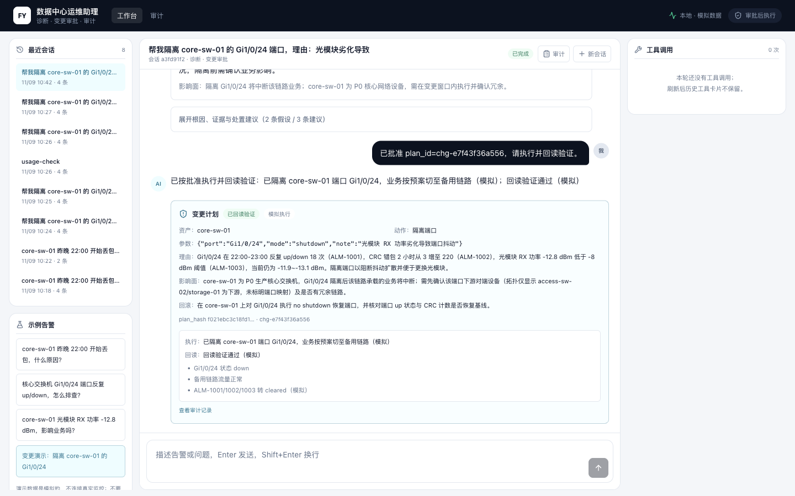
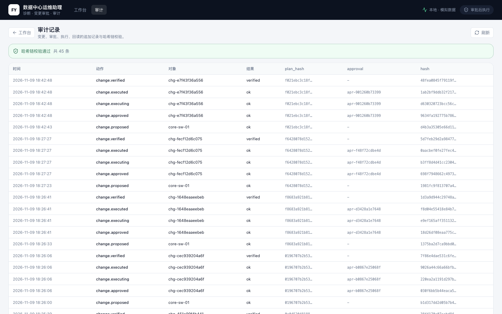

结论必须带证据
每条根因给出来源指标/告警；没有数据就明确说不知道，不用听起来合理的猜测填空。
面向数据中心值班工程师的个人运维助理。输入一条告警，查资产、指标、告警、拓扑和 runbook，给出带证据的根因与处置建议；需要变更时先出计划，人工批准后由确定性代码模拟执行并回读，全过程写入可校验的哈希链。
Gi1/0/24 光模块 RX 功率劣化，导致端口抖动与 CRC 错包，进而丢包。
以下内容全部由本地 Mock 数据驱动：点击样例、批准变更、查看审计；不会发起网络请求，也不会调用模型。
| 时间 | 动作 | 对象 | 结果 | plan_hash | approval |
|---|
展示值用于说明链路结构，不是真实设备或真实审计数据。
完整前端为 Next.js 工作台 + 审计页；下面是项目验收时留下的真实截图。


每条根因给出来源指标/告警；没有数据就明确说不知道，不用听起来合理的猜测填空。
模型只负责生成计划；批准由人完成，审批与 plan_hash 绑定，过期/重放/改参数都拒绝。
批准后的执行由确定性代码完成，模型不碰执行权；执行器在演示中明确标注“模拟”。
proposed / approved / executing / executed / verified 追加写入，哈希链可重算校验。
公开页只展示交互和结果；真实诊断需要后端、模型 Key 和模拟 Provider，均在本地启动。
cd backend
python3.12 -m venv .venv
.venv/bin/pip install -r requirements.txt
cp .env.example .env
.venv/bin/python -m uvicorn app.main:app --host 127.0.0.1 --port 8020cd frontend
cp .env.example .env.local
npm install
npm run dev
# http://localhost:3010/仓库不包含任何 API Key、`.env`、数据库或构建产物。克隆后按 README 创建配置。